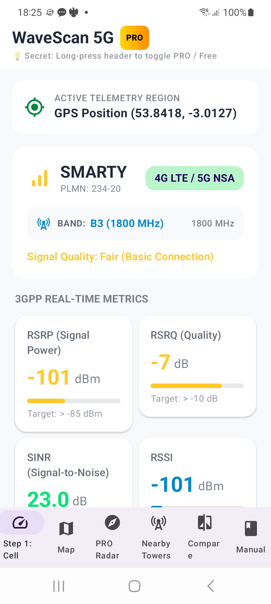
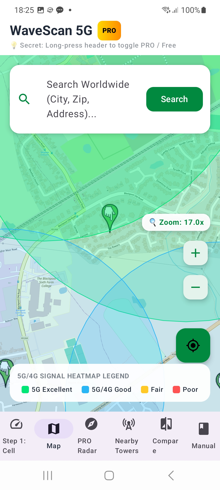
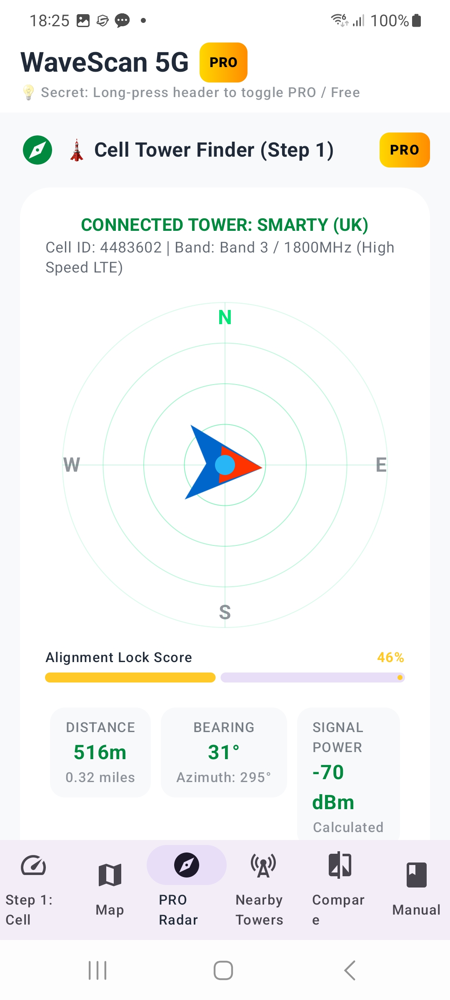
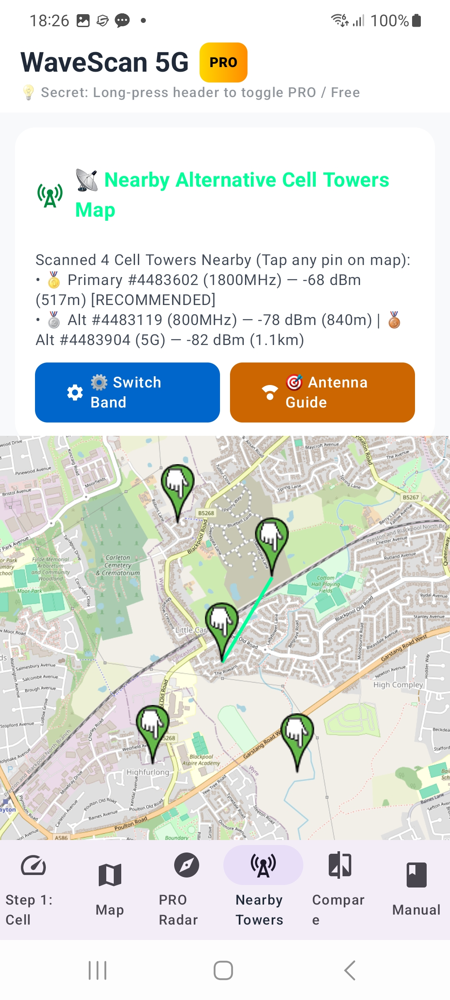
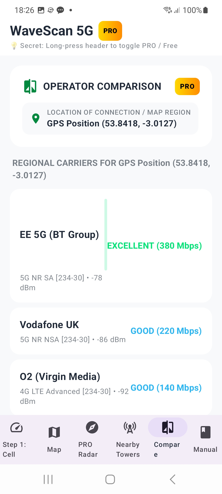
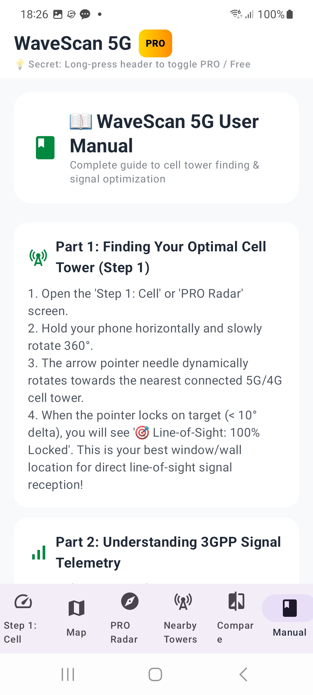
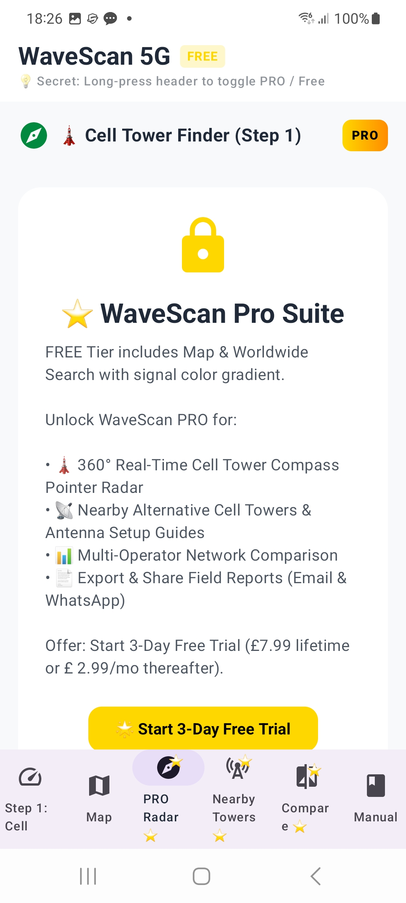

📱 Application Interface & Screenshots
Explore the 7 core telemetry screens of CellCoverage 5g & WaveScan Pro:

1. Live Dashboard
3GPP RSRP, RSRQ, SINR gauges, 5G NR SA/NSA badges, and band metrics.

2. Worldwide Signal Map
OpenStreetMap vector map with shaded 5G C-Band signal heatmaps and location search.

3. 360° Compass Radar
Real-time directional pointer arrow, line-of-sight lock status, and distance calculations.

4. Nearby Towers
Alternative cell masts map, radio band selection shortcuts, and router antenna guides.

5. Operator Comparison
Side-by-side regional carrier speed rankings and MCC-MNC operator codes.

6. User Manual
In-depth antenna alignment guides, 3GPP telemetry explanations, and band lock tips.

7. WaveScan Pro Suite
3-Day Free Trial unlock overview for PDF/CSV report sharing via Email and WhatsApp.
⚡ Why CellCoverage 5g Outperforms Legacy Rivals
| Key Feature | CellCoverage 5g (WaveScan Pro) | CellMapper | Network Cell Info | OpenSignal |
|---|---|---|---|---|
| Map Engine Performance | ⚡ OpenStreetMap Vector (60 FPS) | Heavy Raster Tiles (Slow) | Google Maps Raster | Static Map Overlays |
| 360° Directional Compass Radar | ✅ Real-Time Azimuth Needle | ❌ None | ❌ Static Pointer Only | ❌ None |
| 5G Band Granularity (n78 vs n28) | ✅ Isolated C-Band & Low-Band | ⚠️ Mixed 5G/4G | ⚠️ Basic Info | ❌ Aggregated Only |
| Battery Optimization | ⚡ WorkManager (Zero Drain) | ❌ Heavy Battery Polling | ❌ Continuous Loop | ⚠️ Moderate Background |
| PDF & CSV Report Export / Share | ✅ Native Email & WhatsApp Share | ❌ CSV Export Only | ❌ Paid Add-On | ❌ None |
📖 Complete Field Operating Instructions
Part 1: Finding Optimal Cell Tower Line-of-Sight
- Open the Step 1: Cell or PRO Radar screen.
- Hold your phone horizontally and slowly rotate 360°.
- The compass pointer arrow dynamically rotates toward your connected cell tower.
- When aligned (< 10° delta), the indicator turns NEON GREEN with
🎯 Line-of-Sight: 100% Locked. This identifies the best exterior window or wall for your router placement!
Part 2: 3GPP Signal Metrics Guide
- RSRP (Reference Signal Power): Target > -85 dBm for ultra-fast 5G broadband.
- RSRQ (Signal Quality): Target > -10 dB. Measures signal purity.
- SINR (Signal-to-Noise Ratio): Target > 15 dB. Higher SINR delivers faster throughput.
- Band n78 (3,500 MHz): High-capacity 5G C-Band (requires line-of-sight).
- Band n28 / B20 (700-800 MHz): Long-range coverage band for penetrating thick walls.
Part 3: Radio Band Switch & Antenna Alignment
- Tap ⚙️ Switch Band on Nearby Towers to open the Android Radio Testing screen (
*#*#4636#*#*). - Select 'LTE Only' to force your phone off congested 5G cells onto alternative 4G LTE towers.
- Rotate outdoor Yagi or MIMO 5G/LTE antennas toward the identified 360° azimuth bearing angle for maximum gain.